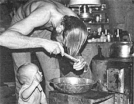

A pioneer in the Alaskan wilderness tells us how to . . .
Some 10 years back, I left the city and set out to build a cabin in the Alaskan wilderness. It was late September before I could actually begin construction of the dwelling, and the rivers were already freezing . . . so I had to work hard and quick!
Yet - despite the rigorous physical labor - I'd go for days without a bath. At the time I told myself I couldn't wash because of the cold weather and primitive camp conditions . . . but now I know that I simply hadn't yet adjusted to "new" means of keeping clean.
Since then, I've spent as much as 26 months at a stretch without even seeing running water, and I've very rarely missed my daily bath. I'd like to pass on what I've learned to any of you who may be about to quit the city and its conveniences . . . whether on a permanent or a temporary basis.
I once doubted the word of a friend who told me that he'd been taught to take a complete bath with an army helmet full of water. Now I know he was telling the truth, because I've done it myself . . . using a hard hat while fighting forest fires. The fact is, it's possible to clean every part of your body but your hair - using an ordinary metal wash basin - with only seven cups of water . . . which is just under half a gallon!
A complete bush-country bathing outfit should include a 15-inch metal basin, washcloth, towel, soap, baking soda, and fingernail brush. It's best to stay away from enamel basins (they'll eventually crack, and you'll ram an enamel chip under your fingernail sooner or later), and steel tubs will rust . . . in spite of their shiny appearance when new. Aluminum, on the other hand, has never failed me. Whatever type of basin you use, however, keep a fingernail brush handy for scrubbing out the dirt film after you bathe.
The real secret of this water-conserving wash method is the elimination of soap from most of the bath. If you really lather up, you face the problem of getting rid of the suds, and - when you're washing from a small tub - this can be such a chore that you may start to skip baths altogether.
You'll be better off if you take a bath - without soap - every single day. Simply rub down well with a hot, wet washrag, rinsing the cloth frequently. (You may want to use soap on the hairy parts of the body, but this small amount of suds can usually be rinsed off with a damp rag.)
Hair washing presents a special problem . . . again, because it's very difficult to rinse off the suds. Leftover soap or shampoo is bound to make your scalp itch, but you can get your "crowning glory" clean - and avoid the "itches" - by using baking soda!
You see, all soaps are made by combining a fat and an alkali (usually lye) . . . and baking soda - itself a mild alkali - seems to react with hair oils to produce its own natural, mild washing product. Under the proper conditions, soda will even create a copious lather.
To wash your hair, put two or three cups of soft water into the basin . . . (make sure the liquid is as hot as your scalp can stand!). Add two or three tablespoons of baking soda (NOT baking powder), then bend over the basin and soak your scalp. Comb the soda solution through your hair . . . backward, forward, and sideways. Any dirt will immediately begin to wash out, and - in a short time - will neutralize most of the soda. So after you've combed the solution through your hair several times, throw out the first batch of "soda water" and prepare another. Repeat the combing process, then pile your wet hair on top of your head to let the "bicarb shampoo" work while you take your bath, and brush your teeth.
When you "draw" your bath water, add a heaping teaspoon of soda to that liquid, too. Baking soda is a good cleaning and deodorizing agent, and I believe it has a beneficial effect on any kind of skin. (Pregnant women sometimes use it to relieve the itching sensation caused by their bellies' stretching.) My guess is that the mild alkali combines with skin oil - just as it does with hair oils - to form a natural soap. One thing's for sure . . . a soda wash leaves you feeling clean and refreshed.
After your bath, put a new supply of warm water in the basin, dunk your head again, massage your scalp with your finger tips, then comb out the soda water . . . along with the remaining dirt. You'll have a sweet-smelling, clean head of hair, and there'll be no leftover soap to make your scalp itch.
The key to a successful baking-soda shampoo is soft water, and I've found that I get the best results with melted snow. (Rainwater ought to be equally soft, but I think it may be affected by the containers - galvanized metal, especially - that you catch it in.) However, if you want to break away from soaps and shampoos, just try mixing up a baking soda solution using the softest water you're able to obtain. I can practically guarantee that you'll be pleased with the results!
There was a time when I felt that a "sponge bath" was something you got in the hospital when you were too sick to make it to the shower. Now that I've bathed out of a basin for 10 years, I realize that showers and bathtubs are nothing more than very nice - but also very unnecessary - luxuries.
EDITOR'S NOTE: Whenever you use a new substance on your skin or scalp, make a small patch test to check for any possible allergic reactions.
|
 |
|
|